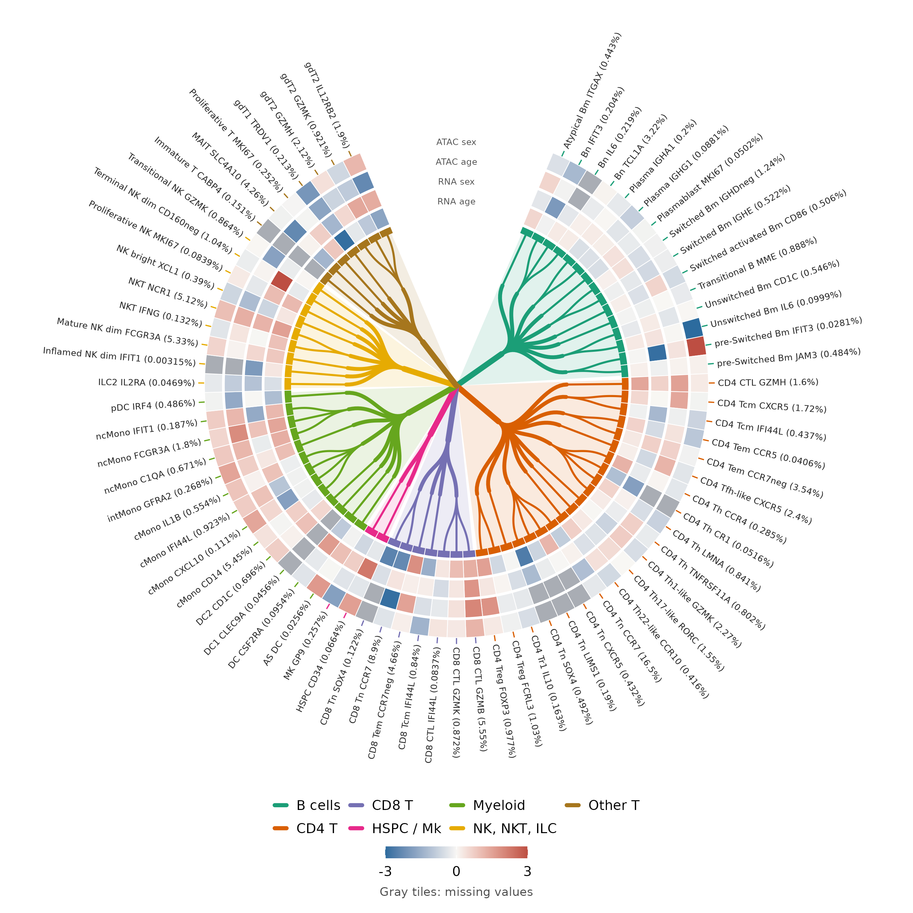

Use CellTreePlot() to draw the 73 level 4 (L4) cell subtypes in the Chinese Immune Multi-Omics Atlas (CIMA). The leaf labels show the share of scRNA-seq cells in each subtype. Four rings show how subtype proportions vary with age and sex in scRNA-seq and scATAC-seq. For a smaller example using bundled data, see the PBMC multiome example in the function reference.
Read the atlas summaries
Download five public CSV files from the CIMA Cell Atlas resources. The scRNA-seq proportion table supplies the subtype names, cell counts, and proportions. The other four tables supply the age and sex statistics. You need internet access to run this example.
base_url <- paste0(
"https://ftp.cngb.org/pub/SciRAID/trueblood/cima/",
"CIMA_Resource/Cell_Atlas/CIMA_Cell_Type_L4_"
)
files <- c(
proportion = "scRNA_Proportion.csv",
"RNA age" = "scRNA_Proportion_Age_Related.csv",
"RNA sex" = "scRNA_Proportion_Sex_Related.csv",
"ATAC age" = "scATAC_Proportion_Age_Related.csv",
"ATAC sex" = "scATAC_Proportion_Sex_Related.csv"
)
summaries <- lapply(files, function(file) {
utils::read.csv(paste0(base_url, file), fileEncoding = "UTF-8-BOM",
check.names = FALSE, na.strings = c("", "NA"))
})
cima <- summaries$proportionGroup the subtype labels for the tree
Use seven broad groups for the branch colors. For the next level, take the part of each L4 name before its last underscore as the family. These are display groups derived from the L4 names. The study’s four-level annotation appears in Fig. 1E and Table S1 of Yin et al..
patterns <- c(
"HSPC / Mk" = "(HSPC|MK)_.+",
Myeloid = "(.*DC|.*Mono).+|AS_DC",
"Other T" = "(gdT|MAIT|Immature_T|Proliferative_T).+",
"CD8 T" = "CD8_.+",
"CD4 T" = "CD4_.+",
"NK, NKT, ILC" = "(.*NK|ILC).+",
"B cells" = "(.*_Bm_|Bn_|Transitional_B_|Plasma).+"
)
cima$Lineage <- NA_character_
for (lineage in names(patterns)) {
pattern <- paste0("^(?:", patterns[[lineage]], ")$")
cima$Lineage[grepl(pattern, cima$cell_type_l4, perl = TRUE)] <- lineage
}
cima$Family <- sub("_[^_]+$", "", cima$cell_type_l4)
cima$Subtype <- gsub("_", " ", cima$cell_type_l4, fixed = TRUE)
hierarchy <- c("Lineage", "Family", "Subtype")Align and standardize the age and sex statistics
Match the published subtype identifiers exactly. The first column of
each association CSV holds those identifiers. Unmatched subtypes and
blank statistics stay as NA. For a shared color scale,
thisutils::normalization() subtracts each ring’s mean and
divides by its sample standard deviation across subtypes with values.
Use na_rm = FALSE to keep missing values and clip the z
scores at ±3. The output counts the subtypes with a value in each
ring.
associations <- summaries[-1L]
fields <- c("correlation", "log2FC", "age_correlation", "log2FC")
tracks <- cima[hierarchy]
for (i in seq_along(associations)) {
association <- associations[[i]]
rows <- match(cima$cell_type_l4, association[[1L]])
z <- thisutils::normalization(association[[fields[[i]]]][rows],
method = "z_score", na_rm = FALSE)
tracks[[names(associations)[[i]]]] <- pmax(-3, pmin(3, z))
}
colSums(!is.na(tracks[names(associations)]))
#> RNA age RNA sex ATAC age ATAC sex
#> 71 71 64 64Draw and read the four rings
The thin band at the branch tips uses the lineage colors. Read the four numeric rings outside that band from the inside out:
- RNA age. Correlation between age and scRNA-seq subtype proportion.
- RNA sex. Log2 fold change in scRNA-seq subtype proportion between sex groups.
- ATAC age. Correlation between age and scATAC-seq subtype proportion.
- ATAC sex. Log2 fold change in scATAC-seq subtype proportion between sex groups.
Red and blue show z scores above and below the ring mean. Gray marks an unavailable value. A measured zero or a nonsignificant result can still have a color. Use the source tables for the original effect sizes, signs, and p-values.
Pass the published cell_count column so the labels show
percentages of the 6,484,974 scRNA-seq cells in the proportion table.
Each subtype occupies the same angle in the tree. The numeric columns in
tracks set the ring order.
scop::CellTreePlot(
cima, levels = hierarchy, count = "cell_count", tracks = tracks,
label.size = 2.1
)